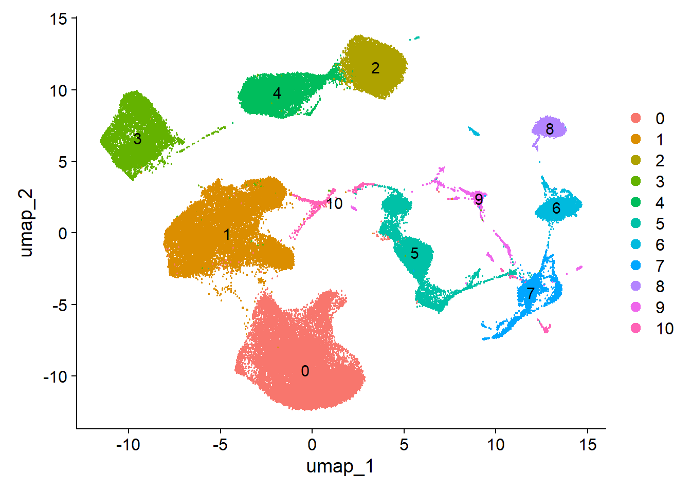
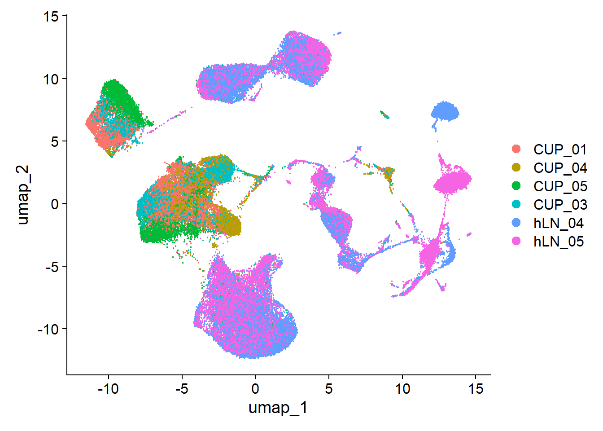
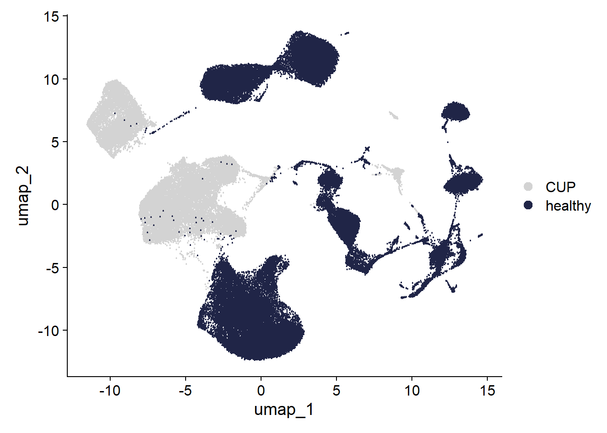

CUP Umaps
HW.Cheng
2025-04-25
Last updated: 2025-07-22
Checks: 5 2
Knit directory: CUP/
This reproducible R Markdown analysis was created with workflowr (version 1.7.1). The Checks tab describes the reproducibility checks that were applied when the results were created. The Past versions tab lists the development history.
The R Markdown is untracked by Git. To know which version of the R
Markdown file created these results, you’ll want to first commit it to
the Git repo. If you’re still working on the analysis, you can ignore
this warning. When you’re finished, you can run
wflow_publish to commit the R Markdown file and build the
HTML.
Great job! The global environment was empty. Objects defined in the global environment can affect the analysis in your R Markdown file in unknown ways. For reproduciblity it’s best to always run the code in an empty environment.
The command set.seed(20250318) was run prior to running
the code in the R Markdown file. Setting a seed ensures that any results
that rely on randomness, e.g. subsampling or permutations, are
reproducible.
Great job! Recording the operating system, R version, and package versions is critical for reproducibility.
Nice! There were no cached chunks for this analysis, so you can be confident that you successfully produced the results during this run.
Using absolute paths to the files within your workflowr project makes it difficult for you and others to run your code on a different machine. Change the absolute path(s) below to the suggested relative path(s) to make your code more reproducible.
| absolute | relative |
|---|---|
| /R/CUP/data/CD45pos/ | data/CD45pos |
| /R/CUP/data/CD45pos_seurat_merge.rds | data/CD45pos_seurat_merge.rds |
| /R/CUP/analysis/markerGenes_CD45pos | analysis/markerGenes_CD45pos |
Great! You are using Git for version control. Tracking code development and connecting the code version to the results is critical for reproducibility.
The results in this page were generated with repository version e1bdb0b. See the Past versions tab to see a history of the changes made to the R Markdown and HTML files.
Note that you need to be careful to ensure that all relevant files for
the analysis have been committed to Git prior to generating the results
(you can use wflow_publish or
wflow_git_commit). workflowr only checks the R Markdown
file, but you know if there are other scripts or data files that it
depends on. Below is the status of the Git repository when the results
were generated:
Ignored files:
Ignored: .DS_Store
Ignored: .Rhistory
Ignored: .Rproj.user/
Ignored: analysis/.RData
Ignored: analysis/.Rhistory
Ignored: analysis/figure/
Ignored: data/CD45pos/
Ignored: data/seurat_objects/
Untracked files:
Untracked: analysis/CUP_CD45_merge_healthy.Rmd
Untracked: analysis/CUP_knitting_easy_read.Rmd
Untracked: analysis/markerGenes_CD45pos
Note that any generated files, e.g. HTML, png, CSS, etc., are not included in this status report because it is ok for generated content to have uncommitted changes.
There are no past versions. Publish this analysis with
wflow_publish() to start tracking its development.
R Markdown
This is an R Markdown document. Markdown is a simple formatting syntax for authoring HTML, PDF, and MS Word documents. For more details on using R Markdown see http://rmarkdown.rstudio.com.
When you click the Knit button a document will be generated that includes both content as well as the output of any embedded R code chunks within the document. You can embed an R code chunk like this:
load packages
load files and merge
##load merged file
fileNam <- "/R/CUP/data/CD45pos_seurat_merge.rds"
seuratM <- readRDS(fileNam)
table(seuratM$dataset)
373291_02-2_20241211_Hu_CUP_01_CD45pos 373291_04-4_20241211_Hu_CUP_04_CD45pos
8611 5382
373291_06-6_20241211_Hu_CUP_05_CD45pos 373291_08-8_20241211_Hu_CUP_03_CD45pos
6703 6774
o27533_1_02-2_20220201_Hu_LN_CD3_v3 o27533_1_03-3_20220201_Hu_LN_CD19_v3
10734 7665
o27533_1_04-4_20220201_Hu_LN_Myeloid_v3 o27533_1_06-6_20220202_Hu_LN_CD3_v3
6182 12724
o27533_1_07-7_20220202_Hu_LN_CD19_v3 o27533_1_08-8_20220202_Hu_LN_Myeloid_v3
7525 10287 table(seuratM$RNA_snn_res.0.25)
0 1 2 3 4 5 6 7 8 9 10 11 12 13 14 15
21705 9651 8382 7672 7020 5968 5164 2988 2824 2525 2059 1696 1662 1140 709 469
16 17 18 19
326 262 183 182 table(seuratM$orig.ident)
82587 add metadata
### add any type of metadata
CUP_pat_01 <- c("373291_02-2_20241211_Hu_CUP_01_CD45pos")
CUP_pat_04 <- c("373291_04-4_20241211_Hu_CUP_04_CD45pos")
CUP_pat_05 <- c("373291_06-6_20241211_Hu_CUP_05_CD45pos")
CUP_pat_03 <- c("373291_08-8_20241211_Hu_CUP_03_CD45pos")
hLN_04 <- c("o27533_1_02-2_20220201_Hu_LN_CD3_v3","o27533_1_03-3_20220201_Hu_LN_CD19_v3","o27533_1_04-4_20220201_Hu_LN_Myeloid_v3")
hLN_05 <- c("o27533_1_06-6_20220202_Hu_LN_CD3_v3","o27533_1_07-7_20220202_Hu_LN_CD19_v3","o27533_1_08-8_20220202_Hu_LN_Myeloid_v3")
seuratM$patient <- "pat_nr"
seuratM$patient[which(seuratM$dataset %in% CUP_pat_01)] <- "CUP_01"
seuratM$patient[which(seuratM$dataset %in% CUP_pat_04)] <- "CUP_04"
seuratM$patient[which(seuratM$dataset %in% CUP_pat_05)] <- "CUP_05"
seuratM$patient[which(seuratM$dataset %in% CUP_pat_03)] <- "CUP_03"
seuratM$patient[which(seuratM$dataset %in% hLN_04)] <- "hLN_04"
seuratM$patient[which(seuratM$dataset %in% hLN_05)] <- "hLN_05"
table(seuratM$patient)
CUP_01 CUP_03 CUP_04 CUP_05 hLN_04 hLN_05
8611 6774 5382 6703 24581 30536 table(seuratM$orig.ident)
82587 #### diseaseCond
seuratM$diseaseCond <- "diseaseCond"
seuratM$diseaseCond[grepl("CUP", seuratM$dataset)] <- "CUP"
seuratM$diseaseCond[grepl("LN", seuratM$dataset)] <- "healthy"
table(seuratM$diseaseCond)
CUP healthy
27470 55117 ###order
orddiseaseCond <- c("healthy", "CUP")
seuratM$diseaseCond <- factor(seuratM$diseaseCond, levels=c("healthy", "CUP"))
Idents(seuratM) <- seuratM$diseaseCond
table(seuratM$diseaseCond)
healthy CUP
55117 27470 rerun seurat
#rerun seurat
seuratM <- NormalizeData (object = seuratM)
seuratM <- FindVariableFeatures(object = seuratM, selection.method = "vst", nfeatures = 3000)
seuratM <- ScaleData(object = seuratM, verbose = TRUE)
seuratM <- RunPCA(object=seuratM, npcs = 20, verbose = FALSE)
seuratM <- RunTSNE(object=seuratM, reduction="pca", dims = 1:20, check_duplicates = FALSE)
seuratM <- RunUMAP(object=seuratM, reduction="pca", dims = 1:20)
seuratM <- FindNeighbors(object = seuratM, reduction = "pca", dims= 1:20)
res <- c(0.25, 0.6, 0.8, 0.4, 0.1)
for (i in 1:length(res)) {
seuratM <- FindClusters(object = seuratM, resolution = res[i], random.seed = 1234)
}plot cell numbers
cell_count <- data.frame(table(seuratM$patient))
colnames(cell_count) <- c("patient", "Freq")
hsize <- 1.5
ggplot(cell_count, aes(x = hsize, y = Freq, fill = patient)) +
#scale_fill_manual(values = colpat2) +
geom_col(color = "white") +
coord_polar(theta = "y") +
xlim(c(0.2, hsize + 0.5)) +
theme_void() +
ggtitle("cell number") +
theme(plot.title = element_text(hjust = 0.5, size = 15)) +
geom_text(aes(label = Freq), position = position_stack(vjust = 0.5))
plot umaps
Idents(seuratM) <- seuratM$RNA_snn_res.0.1
DimPlot(seuratM, reduction = "umap", pt.size = 0.1,label = TRUE) 
Idents(seuratM) <- seuratM$patient
DimPlot(seuratM, reduction = "umap", pt.size = 0.1, shuffle = TRUE) 
Idents(seuratM) <- seuratM$diseaseCond
coldiseaseCond <- c("#202547","lightgrey")
names(coldiseaseCond) <- c("healthy", "CUP")
DimPlot(seuratM, reduction = "umap", pt.size = 0.1, cols = coldiseaseCond, order = "healthy") 
calculate cluster marker genes
##cluster marker
Idents(seuratM) <- seuratM$RNA_snn_res.0.1
markerGenes <- FindAllMarkers(seuratM, only.pos=T) %>%
dplyr::filter(p_val_adj < 0.01)
#save table
write.table(markerGenes,
file= "/R/CUP/analysis/markerGenes_CD45pos",
sep="\t",
quote=F,
row.names=F,
col.names=T)Assign cell types to clusters
colclusterName <- c("#67001f", "#D53E4F", "#f4a582", "#FEE08B","#66C2A5", "#3288BD","#BEAED4", "#c7eae5","#355C7D","#202547","#B45B5C")
names(colclusterName) <- c("T_cell_1","T_cell_2","B_cell_1","B_cell_2","B_cell_3","NK", "Mph1","Mph2","proliferating","pDC_1","pDC_2")
##assign celltypes
seuratM$colclusterName <- "celltype"
seuratM$colclusterName[which(seuratM$RNA_snn_res.0.1 == "0")] <- "T_cell_1"
seuratM$colclusterName[which(seuratM$RNA_snn_res.0.1 == "1")] <- "T_cell_2"
seuratM$colclusterName[which(seuratM$RNA_snn_res.0.1 == "2")] <- "B_cell_1"
seuratM$colclusterName[which(seuratM$RNA_snn_res.0.1 == "3")] <- "B_cell_2"
seuratM$colclusterName[which(seuratM$RNA_snn_res.0.1 == "4")] <- "B_cell_3"
seuratM$colclusterName[which(seuratM$RNA_snn_res.0.1 == "5")] <- "NK"
seuratM$colclusterName[which(seuratM$RNA_snn_res.0.1 == "6")] <- "pDC_1"
seuratM$colclusterName[which(seuratM$RNA_snn_res.0.1 == "7")] <- "Mph1"
seuratM$colclusterName[which(seuratM$RNA_snn_res.0.1 == "8")] <- "pDC_2"
seuratM$colclusterName[which(seuratM$RNA_snn_res.0.1 == "9")] <- "Mph2"
seuratM$colclusterName[which(seuratM$RNA_snn_res.0.1 == "10")] <- "proliferating"
# Define your desired order
celltype_order <- c("T_cell_1","T_cell_2","B_cell_1","B_cell_2","B_cell_3","NK", "Mph1","Mph2","proliferating","pDC_1","pDC_2")
seuratM$colclusterName <- factor(seuratM$colclusterName, levels = celltype_order)
# Define the order you want
patient_order <- c("CUP_01", "CUP_03", "CUP_04", "CUP_05", "hLN_04","hLN_05") # customize as needed
seuratM$patient <- factor(seuratM$patient, levels = patient_order)
Idents(seuratM) <- seuratM$colclusterName
DimPlot(seuratM, reduction = "umap", pt.size = 0.1, cols = colclusterName, label =FALSE) 
Idents(seuratM) <- seuratM$colclusterName
DimPlot(seuratM, reduction = "umap", pt.size = 0.1, cols = colclusterName, label =FALSE, split.by = "patient") 
Gene expression in different cell types
T cell marker
## T cell marker
FeaturePlot(seuratM, features = "ENSG00000198851.CD3E", pt.size = 0.5, cols = c("lightgrey", "#BE3144"))
FeaturePlot(seuratM, features = "ENSG00000167286.CD3D", pt.size = 0.5, cols = c("lightgrey", "#BE3144"))
FeaturePlot(seuratM, features = "ENSG00000010610.CD4", pt.size = 0.5, cols = c("lightgrey", "#BE3144"))
FeaturePlot(seuratM, features = "ENSG00000153563.CD8A", pt.size = 0.5, cols = c("lightgrey", "#BE3144"))
B cell marker
## B cell marker
FeaturePlot(seuratM, features = "ENSG00000105369.CD79A", pt.size = 0.5, cols = c("lightgrey", "#BE3144"))
FeaturePlot(seuratM, features = "ENSG00000007312.CD79B", pt.size = 0.5, cols = c("lightgrey", "#BE3144"))
FeaturePlot(seuratM, features = "ENSG00000004468.CD38", pt.size = 0.5, cols = c("lightgrey", "#BE3144"))
FeaturePlot(seuratM, features = "ENSG00000211898.IGHD", pt.size = 0.5, cols = c("lightgrey", "#BE3144"))
FeaturePlot(seuratM, features = "ENSG00000211899.IGHM", pt.size = 0.5, cols = c("lightgrey", "#BE3144"))
Myeloid cell marker
## NK cell marker
FeaturePlot(seuratM, features = "ENSG00000134539.KLRD1", pt.size = 0.5, cols = c("lightgrey", "#BE3144"))
FeaturePlot(seuratM, features = "ENSG00000111796.KLRB1", pt.size = 0.5, cols = c("lightgrey", "#BE3144"))
FeaturePlot(seuratM, features = "ENSG00000134545.KLRC1", pt.size = 0.5, cols = c("lightgrey", "#BE3144"))
FeaturePlot(seuratM, features = "ENSG00000211829.TRDC", pt.size = 0.5, cols = c("lightgrey", "#BE3144"))
## Macrophage marker
FeaturePlot(seuratM, features = "ENSG00000090382.LYZ", pt.size = 0.5, cols = c("lightgrey", "#BE3144"))
FeaturePlot(seuratM, features = "ENSG00000085265.FCN1", pt.size = 0.5, cols = c("lightgrey", "#BE3144"))
FeaturePlot(seuratM, features = "ENSG00000163220.S100A9", pt.size = 0.5, cols = c("lightgrey", "#BE3144"))
FeaturePlot(seuratM, features = "ENSG00000182578.CSF1R", pt.size = 0.5, cols = c("lightgrey", "#BE3144"))
FeaturePlot(seuratM, features = "ENSG00000170458.CD14", pt.size = 0.5, cols = c("lightgrey", "#BE3144"))
## pDC
FeaturePlot(seuratM, features = "ENSG00000185507.IRF7", pt.size = 0.5, cols = c("lightgrey", "#BE3144"))
FeaturePlot(seuratM, features = "ENSG00000239961.LILRA4", pt.size = 0.5, cols = c("lightgrey", "#BE3144"))
FeaturePlot(seuratM, features = "ENSG00000186818.LILRB4", pt.size = 0.5, cols = c("lightgrey", "#BE3144"))
FeaturePlot(seuratM, features = "ENSG00000198178.CLEC4C", pt.size = 0.5, cols = c("lightgrey", "#BE3144"))
Inhibitory molecule
## T cell - inhibitory molecule
FeaturePlot(seuratM, features = "ENSG00000163600.ICOS", pt.size = 0.5, cols = c("lightgrey", "#BE3144"))
FeaturePlot(seuratM, features = "ENSG00000163599.CTLA4", pt.size = 0.5, cols = c("lightgrey", "#BE3144"))
FeaturePlot(seuratM, features = "ENSG00000188389.PDCD1", pt.size = 0.5, cols = c("lightgrey", "#BE3144"))
FeaturePlot(seuratM, features = "ENSG00000181847.TIGIT", pt.size = 0.5, cols = c("lightgrey", "#BE3144"))
FeaturePlot(seuratM, features = "ENSG00000089692.LAG3", pt.size = 0.5, cols = c("lightgrey", "#BE3144"))
Plot gene signatures onto UMAP
##convert seurat object to sce object
sce <- as.SingleCellExperiment(seuratM)
signatures <- list(
T_cell = c("CD3E","CD3D","CD4","CD8A"),
B_cell = c("CD79A","CD79B","IGHD","IGHM","JCHAIN"),
Myeloid_cell = c("KLRD1","KLRB1","KLRC1","TRDC","LYZ","FCN1","S100A9","CSF1R","CD14" ,"IRF7","LILRA4","LILRB4"),
Inhibitory_function= c("PDCD1","TIGIT","CTLA4","LAG3","ICOS")
)
# Extract gene symbols
genes <- data.frame(geneID = rownames(sce)) %>%
mutate(gene = gsub(".*\\.", "", geneID))
# Function to compute signature and return UMAP plot
plot_signature_umap <- function(sig_name, sig_genes) {
signGenes <- genes %>% filter(gene %in% sig_genes)
sceSub <- sce[rownames(sce) %in% signGenes$geneID, ]
cntMat <- rowSums(t(as.matrix(sceSub@assays@data$logcounts))) / nrow(signGenes)
sceSub$sign <- cntMat
sceSub$sign2 <- pmin(sceSub$sign, 2.5) # cap at 2.5
plotUMAP(sceSub, colour_by = "sign2", point_size = 1) +
scale_color_viridis_c() + # or another color scale
ggtitle(paste0(sig_name, " signature")) +
theme_minimal() +
theme(legend.position = "right")
}
# Generate all plots
umap_plots <- lapply(names(signatures), function(name) {
plot_signature_umap(name, signatures[[name]])
})
# Optionally: show all plots (in interactive session or PDF)
# Print them one by one
for (p in umap_plots) print(p)


### save seurat object
saveRDS(seuratM, file="/R/CUP/data/CD45pos_seurat_merge.rds")session info
date()[1] "Tue Jul 22 22:54:50 2025"sessionInfo()R version 4.4.1 (2024-06-14 ucrt)
Platform: x86_64-w64-mingw32/x64
Running under: Windows 11 x64 (build 22631)
Matrix products: default
locale:
[1] LC_COLLATE=English_United States.utf8 LC_CTYPE=English_United States.utf8
[3] LC_MONETARY=English_United States.utf8 LC_NUMERIC=C
[5] LC_TIME=English_United States.utf8
time zone: Europe/Berlin
tzcode source: internal
attached base packages:
[1] grid stats4 stats graphics grDevices utils datasets methods base
other attached packages:
[1] RColorBrewer_1.1-3 NCmisc_1.2.0 VennDiagram_1.7.3
[4] futile.logger_1.4.3 ggupset_0.4.1 gridExtra_2.3
[7] DOSE_3.30.5 enrichplot_1.24.4 msigdbr_24.1.0
[10] org.Hs.eg.db_3.19.1 AnnotationDbi_1.66.0 clusterProfiler_4.12.6
[13] multtest_2.60.0 metap_1.12 scater_1.32.1
[16] scuttle_1.14.0 destiny_3.18.0 circlize_0.4.16
[19] muscat_1.18.0 viridis_0.6.5 viridisLite_0.4.2
[22] lubridate_1.9.4 forcats_1.0.0 stringr_1.5.1
[25] purrr_1.0.4 readr_2.1.5 tidyr_1.3.1
[28] tibble_3.2.1 tidyverse_2.0.0 dplyr_1.1.4
[31] SingleCellExperiment_1.26.0 SummarizedExperiment_1.34.0 Biobase_2.64.0
[34] GenomicRanges_1.56.2 GenomeInfoDb_1.40.1 IRanges_2.38.1
[37] S4Vectors_0.42.1 BiocGenerics_0.50.0 MatrixGenerics_1.16.0
[40] matrixStats_1.5.0 pheatmap_1.0.13 ggpubr_0.6.1
[43] ggplot2_3.5.2 Seurat_5.3.0 SeuratObject_5.1.0
[46] sp_2.2-0 runSeurat3_0.1.0 ExploreSCdataSeurat3_0.1.0
loaded via a namespace (and not attached):
[1] igraph_2.1.4 ica_1.0-3 plotly_4.11.0
[4] Formula_1.2-5 zlibbioc_1.50.0 tidyselect_1.2.1
[7] bit_4.6.0 doParallel_1.0.17 clue_0.3-66
[10] lattice_0.22-6 rjson_0.2.23 blob_1.2.4
[13] S4Arrays_1.4.1 pbkrtest_0.5.4 parallel_4.4.1
[16] png_0.1-8 plotrix_3.8-4 cli_3.6.3
[19] ggplotify_0.1.2 goftest_1.2-3 VIM_6.2.2
[22] variancePartition_1.34.0 BiocNeighbors_1.22.0 shadowtext_0.1.5
[25] uwot_0.2.3 curl_6.4.0 tidytree_0.4.6
[28] mime_0.12 evaluate_1.0.4 ComplexHeatmap_2.20.0
[31] stringi_1.8.7 backports_1.5.0 lmerTest_3.1-3
[34] qqconf_1.3.2 httpuv_1.6.15 magrittr_2.0.3
[37] rappdirs_0.3.3 splines_4.4.1 ggraph_2.2.1
[40] sctransform_0.4.2 ggbeeswarm_0.7.2 DBI_1.2.3
[43] jquerylib_0.1.4 smoother_1.3 withr_3.0.2
[46] git2r_0.36.2 corpcor_1.6.10 reformulas_0.4.1
[49] class_7.3-22 rprojroot_2.0.4 lmtest_0.9-40
[52] tidygraph_1.3.1 formatR_1.14 colourpicker_1.3.0
[55] htmlwidgets_1.6.4 fs_1.6.6 ggrepel_0.9.6
[58] labeling_0.4.3 fANCOVA_0.6-1 SparseArray_1.4.8
[61] DESeq2_1.44.0 ranger_0.17.0 DEoptimR_1.1-3-1
[64] reticulate_1.42.0 hexbin_1.28.5 zoo_1.8-14
[67] XVector_0.44.0 knitr_1.50 ggplot.multistats_1.0.1
[70] UCSC.utils_1.0.0 RhpcBLASctl_0.23-42 timechange_0.3.0
[73] foreach_1.5.2 patchwork_1.3.1 caTools_1.18.3
[76] data.table_1.17.6 ggtree_3.12.0 R.oo_1.27.1
[79] RSpectra_0.16-2 irlba_2.3.5.1 fastDummies_1.7.5
[82] gridGraphics_0.5-1 lazyeval_0.2.2 yaml_2.3.10
[85] survival_3.6-4 scattermore_1.2 crayon_1.5.3
[88] RcppAnnoy_0.0.22 progressr_0.15.1 tweenr_2.0.3
[91] later_1.3.2 ggridges_0.5.6 codetools_0.2-20
[94] GlobalOptions_0.1.2 aod_1.3.3 KEGGREST_1.44.1
[97] Rtsne_0.17 shape_1.4.6.1 limma_3.60.6
[100] pkgconfig_2.0.3 TMB_1.9.17 spatstat.univar_3.1-3
[103] mathjaxr_1.8-0 EnvStats_3.1.0 aplot_0.2.7
[106] scatterplot3d_0.3-44 ape_5.8-1 spatstat.sparse_3.1-0
[109] xtable_1.8-4 car_3.1-3 plyr_1.8.9
[112] httr_1.4.7 rbibutils_2.3 tools_4.4.1
[115] globals_0.18.0 beeswarm_0.4.0 broom_1.0.8
[118] nlme_3.1-164 lambda.r_1.2.4 assertthat_0.2.1
[121] lme4_1.1-37 digest_0.6.36 numDeriv_2016.8-1.1
[124] Matrix_1.7-0 farver_2.1.2 tzdb_0.4.0
[127] remaCor_0.0.18 reshape2_1.4.4 yulab.utils_0.2.0
[130] glue_1.7.0 cachem_1.1.0 polyclip_1.10-7
[133] generics_0.1.4 Biostrings_2.72.1 mvtnorm_1.3-3
[136] parallelly_1.45.0 mnormt_2.1.1 statmod_1.5.0
[139] RcppHNSW_0.6.0 ScaledMatrix_1.12.0 carData_3.0-5
[142] minqa_1.2.8 pbapply_1.7-2 httr2_1.1.2
[145] spam_2.11-1 gson_0.1.0 graphlayouts_1.2.2
[148] gtools_3.9.5 ggsignif_0.6.4 RcppEigen_0.3.4.0.2
[151] shiny_1.11.0 GenomeInfoDbData_1.2.12 glmmTMB_1.1.11
[154] R.utils_2.13.0 memoise_2.0.1 rmarkdown_2.29
[157] scales_1.4.0 R.methodsS3_1.8.2 future_1.58.0
[160] RANN_2.6.1 Cairo_1.6-2 spatstat.data_3.1-6
[163] rstudioapi_0.17.1 cluster_2.1.6 mutoss_0.1-13
[166] spatstat.utils_3.1-4 hms_1.1.3 fitdistrplus_1.2-3
[169] cowplot_1.1.3 colorspace_2.1-1 rlang_1.1.4
[172] DelayedMatrixStats_1.26.0 sparseMatrixStats_1.16.0 xts_0.14.1
[175] dotCall64_1.2 shinydashboard_0.7.3 ggforce_0.5.0
[178] laeken_0.5.3 mgcv_1.9-1 xfun_0.52
[181] e1071_1.7-16 TH.data_1.1-3 iterators_1.0.14
[184] abind_1.4-8 GOSemSim_2.30.2 treeio_1.28.0
[187] futile.options_1.0.1 bitops_1.0-9 Rdpack_2.6.4
[190] promises_1.3.3 scatterpie_0.2.5 RSQLite_2.4.1
[193] qvalue_2.36.0 sandwich_3.1-1 fgsea_1.30.0
[196] DelayedArray_0.30.1 proxy_0.4-27 GO.db_3.19.1
[199] compiler_4.4.1 prettyunits_1.2.0 boot_1.3-30
[202] beachmat_2.20.0 listenv_0.9.1 Rcpp_1.0.13
[205] edgeR_4.2.2 workflowr_1.7.1 BiocSingular_1.20.0
[208] tensor_1.5.1 MASS_7.3-60.2 progress_1.2.3
[211] BiocParallel_1.38.0 babelgene_22.9 spatstat.random_3.4-1
[214] R6_2.6.1 fastmap_1.2.0 multcomp_1.4-28
[217] fastmatch_1.1-6 rstatix_0.7.2 vipor_0.4.7
[220] TTR_0.24.4 ROCR_1.0-11 TFisher_0.2.0
[223] rsvd_1.0.5 vcd_1.4-13 nnet_7.3-19
[226] gtable_0.3.6 KernSmooth_2.23-24 miniUI_0.1.2
[229] deldir_2.0-4 htmltools_0.5.8.1 ggthemes_5.1.0
[232] bit64_4.6.0-1 spatstat.explore_3.4-3 lifecycle_1.0.4
[235] blme_1.0-6 S7_0.2.0 nloptr_2.2.1
[238] sass_0.4.10 vctrs_0.6.5 robustbase_0.99-4-1
[241] spatstat.geom_3.4-1 sn_2.1.1 ggfun_0.1.9
[244] future.apply_1.20.0 bslib_0.9.0 pillar_1.10.2
[247] gplots_3.2.0 pcaMethods_1.96.0 locfit_1.5-9.12
[250] jsonlite_2.0.0 GetoptLong_1.0.5
sessionInfo()R version 4.4.1 (2024-06-14 ucrt)
Platform: x86_64-w64-mingw32/x64
Running under: Windows 11 x64 (build 22631)
Matrix products: default
locale:
[1] LC_COLLATE=English_United States.utf8 LC_CTYPE=English_United States.utf8
[3] LC_MONETARY=English_United States.utf8 LC_NUMERIC=C
[5] LC_TIME=English_United States.utf8
time zone: Europe/Berlin
tzcode source: internal
attached base packages:
[1] grid stats4 stats graphics grDevices utils datasets methods base
other attached packages:
[1] RColorBrewer_1.1-3 NCmisc_1.2.0 VennDiagram_1.7.3
[4] futile.logger_1.4.3 ggupset_0.4.1 gridExtra_2.3
[7] DOSE_3.30.5 enrichplot_1.24.4 msigdbr_24.1.0
[10] org.Hs.eg.db_3.19.1 AnnotationDbi_1.66.0 clusterProfiler_4.12.6
[13] multtest_2.60.0 metap_1.12 scater_1.32.1
[16] scuttle_1.14.0 destiny_3.18.0 circlize_0.4.16
[19] muscat_1.18.0 viridis_0.6.5 viridisLite_0.4.2
[22] lubridate_1.9.4 forcats_1.0.0 stringr_1.5.1
[25] purrr_1.0.4 readr_2.1.5 tidyr_1.3.1
[28] tibble_3.2.1 tidyverse_2.0.0 dplyr_1.1.4
[31] SingleCellExperiment_1.26.0 SummarizedExperiment_1.34.0 Biobase_2.64.0
[34] GenomicRanges_1.56.2 GenomeInfoDb_1.40.1 IRanges_2.38.1
[37] S4Vectors_0.42.1 BiocGenerics_0.50.0 MatrixGenerics_1.16.0
[40] matrixStats_1.5.0 pheatmap_1.0.13 ggpubr_0.6.1
[43] ggplot2_3.5.2 Seurat_5.3.0 SeuratObject_5.1.0
[46] sp_2.2-0 runSeurat3_0.1.0 ExploreSCdataSeurat3_0.1.0
loaded via a namespace (and not attached):
[1] igraph_2.1.4 ica_1.0-3 plotly_4.11.0
[4] Formula_1.2-5 zlibbioc_1.50.0 tidyselect_1.2.1
[7] bit_4.6.0 doParallel_1.0.17 clue_0.3-66
[10] lattice_0.22-6 rjson_0.2.23 blob_1.2.4
[13] S4Arrays_1.4.1 pbkrtest_0.5.4 parallel_4.4.1
[16] png_0.1-8 plotrix_3.8-4 cli_3.6.3
[19] ggplotify_0.1.2 goftest_1.2-3 VIM_6.2.2
[22] variancePartition_1.34.0 BiocNeighbors_1.22.0 shadowtext_0.1.5
[25] uwot_0.2.3 curl_6.4.0 tidytree_0.4.6
[28] mime_0.12 evaluate_1.0.4 ComplexHeatmap_2.20.0
[31] stringi_1.8.7 backports_1.5.0 lmerTest_3.1-3
[34] qqconf_1.3.2 httpuv_1.6.15 magrittr_2.0.3
[37] rappdirs_0.3.3 splines_4.4.1 ggraph_2.2.1
[40] sctransform_0.4.2 ggbeeswarm_0.7.2 DBI_1.2.3
[43] jquerylib_0.1.4 smoother_1.3 withr_3.0.2
[46] git2r_0.36.2 corpcor_1.6.10 reformulas_0.4.1
[49] class_7.3-22 rprojroot_2.0.4 lmtest_0.9-40
[52] tidygraph_1.3.1 formatR_1.14 colourpicker_1.3.0
[55] htmlwidgets_1.6.4 fs_1.6.6 ggrepel_0.9.6
[58] labeling_0.4.3 fANCOVA_0.6-1 SparseArray_1.4.8
[61] DESeq2_1.44.0 ranger_0.17.0 DEoptimR_1.1-3-1
[64] reticulate_1.42.0 hexbin_1.28.5 zoo_1.8-14
[67] XVector_0.44.0 knitr_1.50 ggplot.multistats_1.0.1
[70] UCSC.utils_1.0.0 RhpcBLASctl_0.23-42 timechange_0.3.0
[73] foreach_1.5.2 patchwork_1.3.1 caTools_1.18.3
[76] data.table_1.17.6 ggtree_3.12.0 R.oo_1.27.1
[79] RSpectra_0.16-2 irlba_2.3.5.1 fastDummies_1.7.5
[82] gridGraphics_0.5-1 lazyeval_0.2.2 yaml_2.3.10
[85] survival_3.6-4 scattermore_1.2 crayon_1.5.3
[88] RcppAnnoy_0.0.22 progressr_0.15.1 tweenr_2.0.3
[91] later_1.3.2 ggridges_0.5.6 codetools_0.2-20
[94] GlobalOptions_0.1.2 aod_1.3.3 KEGGREST_1.44.1
[97] Rtsne_0.17 shape_1.4.6.1 limma_3.60.6
[100] pkgconfig_2.0.3 TMB_1.9.17 spatstat.univar_3.1-3
[103] mathjaxr_1.8-0 EnvStats_3.1.0 aplot_0.2.7
[106] scatterplot3d_0.3-44 ape_5.8-1 spatstat.sparse_3.1-0
[109] xtable_1.8-4 car_3.1-3 plyr_1.8.9
[112] httr_1.4.7 rbibutils_2.3 tools_4.4.1
[115] globals_0.18.0 beeswarm_0.4.0 broom_1.0.8
[118] nlme_3.1-164 lambda.r_1.2.4 assertthat_0.2.1
[121] lme4_1.1-37 digest_0.6.36 numDeriv_2016.8-1.1
[124] Matrix_1.7-0 farver_2.1.2 tzdb_0.4.0
[127] remaCor_0.0.18 reshape2_1.4.4 yulab.utils_0.2.0
[130] glue_1.7.0 cachem_1.1.0 polyclip_1.10-7
[133] generics_0.1.4 Biostrings_2.72.1 mvtnorm_1.3-3
[136] parallelly_1.45.0 mnormt_2.1.1 statmod_1.5.0
[139] RcppHNSW_0.6.0 ScaledMatrix_1.12.0 carData_3.0-5
[142] minqa_1.2.8 pbapply_1.7-2 httr2_1.1.2
[145] spam_2.11-1 gson_0.1.0 graphlayouts_1.2.2
[148] gtools_3.9.5 ggsignif_0.6.4 RcppEigen_0.3.4.0.2
[151] shiny_1.11.0 GenomeInfoDbData_1.2.12 glmmTMB_1.1.11
[154] R.utils_2.13.0 memoise_2.0.1 rmarkdown_2.29
[157] scales_1.4.0 R.methodsS3_1.8.2 future_1.58.0
[160] RANN_2.6.1 Cairo_1.6-2 spatstat.data_3.1-6
[163] rstudioapi_0.17.1 cluster_2.1.6 mutoss_0.1-13
[166] spatstat.utils_3.1-4 hms_1.1.3 fitdistrplus_1.2-3
[169] cowplot_1.1.3 colorspace_2.1-1 rlang_1.1.4
[172] DelayedMatrixStats_1.26.0 sparseMatrixStats_1.16.0 xts_0.14.1
[175] dotCall64_1.2 shinydashboard_0.7.3 ggforce_0.5.0
[178] laeken_0.5.3 mgcv_1.9-1 xfun_0.52
[181] e1071_1.7-16 TH.data_1.1-3 iterators_1.0.14
[184] abind_1.4-8 GOSemSim_2.30.2 treeio_1.28.0
[187] futile.options_1.0.1 bitops_1.0-9 Rdpack_2.6.4
[190] promises_1.3.3 scatterpie_0.2.5 RSQLite_2.4.1
[193] qvalue_2.36.0 sandwich_3.1-1 fgsea_1.30.0
[196] DelayedArray_0.30.1 proxy_0.4-27 GO.db_3.19.1
[199] compiler_4.4.1 prettyunits_1.2.0 boot_1.3-30
[202] beachmat_2.20.0 listenv_0.9.1 Rcpp_1.0.13
[205] edgeR_4.2.2 workflowr_1.7.1 BiocSingular_1.20.0
[208] tensor_1.5.1 MASS_7.3-60.2 progress_1.2.3
[211] BiocParallel_1.38.0 babelgene_22.9 spatstat.random_3.4-1
[214] R6_2.6.1 fastmap_1.2.0 multcomp_1.4-28
[217] fastmatch_1.1-6 rstatix_0.7.2 vipor_0.4.7
[220] TTR_0.24.4 ROCR_1.0-11 TFisher_0.2.0
[223] rsvd_1.0.5 vcd_1.4-13 nnet_7.3-19
[226] gtable_0.3.6 KernSmooth_2.23-24 miniUI_0.1.2
[229] deldir_2.0-4 htmltools_0.5.8.1 ggthemes_5.1.0
[232] bit64_4.6.0-1 spatstat.explore_3.4-3 lifecycle_1.0.4
[235] blme_1.0-6 S7_0.2.0 nloptr_2.2.1
[238] sass_0.4.10 vctrs_0.6.5 robustbase_0.99-4-1
[241] spatstat.geom_3.4-1 sn_2.1.1 ggfun_0.1.9
[244] future.apply_1.20.0 bslib_0.9.0 pillar_1.10.2
[247] gplots_3.2.0 pcaMethods_1.96.0 locfit_1.5-9.12
[250] jsonlite_2.0.0 GetoptLong_1.0.5